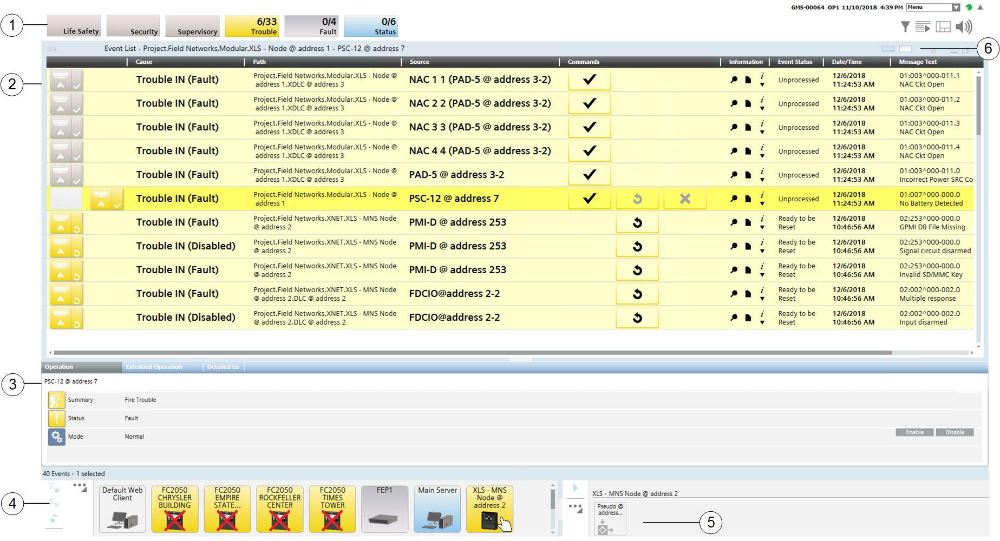

DMS Lite User Interface
The screen of the Lite UI DMS management station displays, from top to bottom:
- TheSummary bar, which can be collapsed in a slim bar row or expanded
- TheEvent List, which presents all detected events
- Optionally, in advanced mode, the Contextual pane, which contains detailed properties and commands of the selected object
- The Node Map, on the lower-left part of the screen, which displays dynamic symbols representing control panels and system components
- The Macro Viewer, on the lower-right part of the screen, which displays dynamic symbols representing selected control objects

| Name | Description |
1 | Summary bar | The main point of entry to all the functions of the software. It can be collapsed and you must click the downicon |
2 | Event List | The Event List displays all the detected events with each one on a separate row. This window is your main starting point for dealing with events. |
3 | Contextual pane | Detailed properties and control commands are available in the Status and Commands window. |
4 | Node Map | The Node Map enables you to monitor and control the installed control panels, which display as graphic symbols that show the category color of the most important event, and blink when an event acknowledgement is required. For more information, see Node Map. |
5 | Macro Viewer | The Macro Viewer is an application for displaying and commanding selected control objects: system macros and control panel pseudo-points that are included in a dedicated scope. For more information, see Macro Viewer. |
6 | Layout selection | The layout icons allow switching between primary and advanced interface. |
 on the top right to display it.
on the top right to display it.